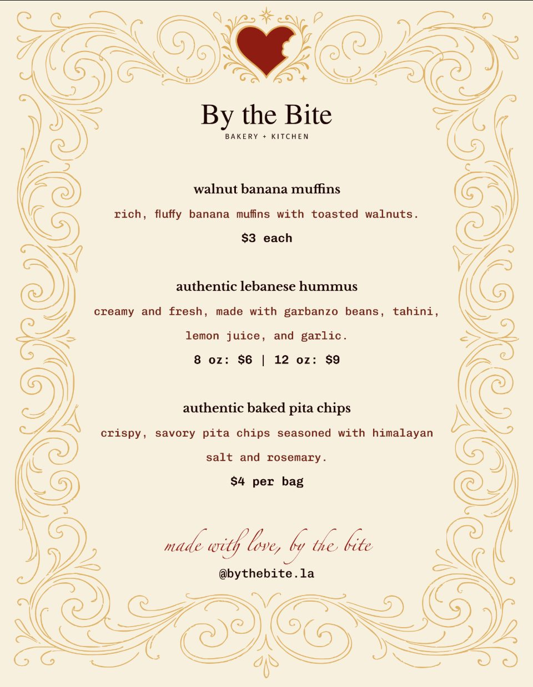
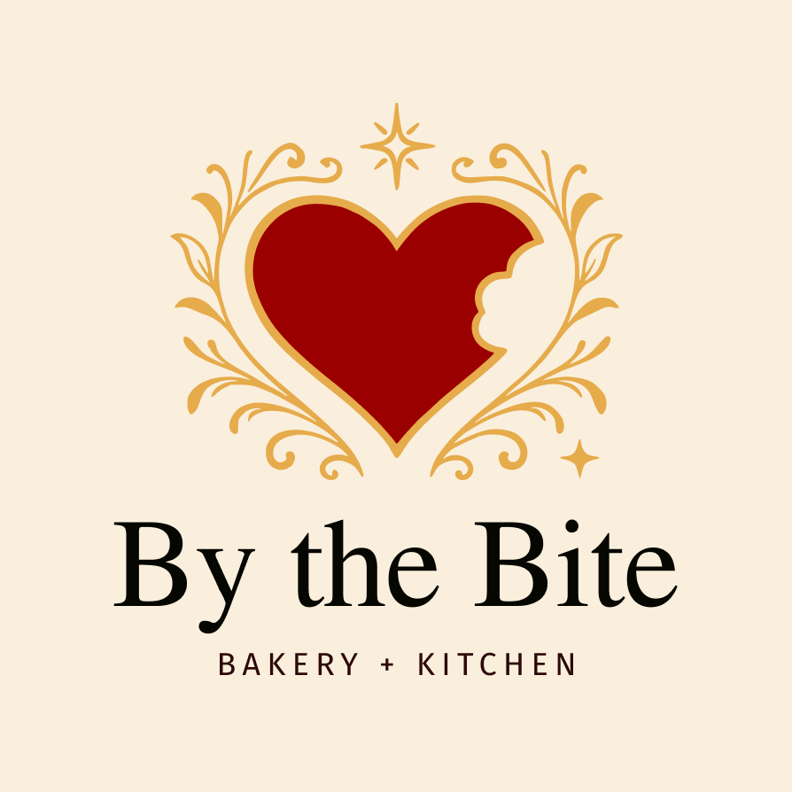
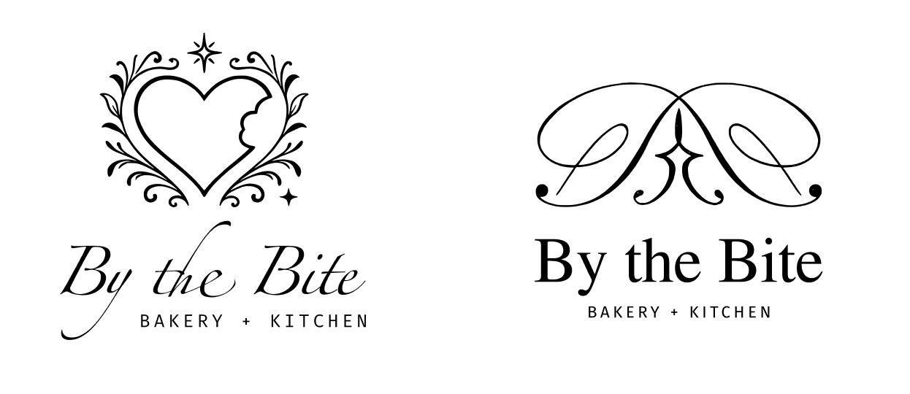

I volunteered to define the brand and create the assets for a local small business. Logo, colors, menu, product labels, and banner, plus the look and feel of everything around them: wood grains, natural colored fabrics, and simple decor.
Authentic Lebanese Hummus packaging labelFirst attendance at the local farmer's market: banner, product labels, product layout. Not pictured is the framed menu, which was getting printed at this time.

Menu for the farmers market

Final chosen logo

Early directions explored before landing on the final mark